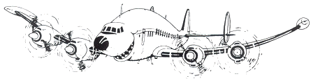

Aircraft have been a life-long love affair for me. Don't ask me why. I don't even like to fly.
I guess it's the sheer impossibility of something heavier than air leaving the ground like that. But there must be more to it, because lifting something with a magnet does not hold the same fascination for me.
Maybe it's just a holdover of living under a runway as a kid in the 1950's, and the promise to a small boy of a glamorous life as a hero. Well, that's not how it panned out. But the love affair never stopped.
The tabs above give some results of a life of looking up when something flies overhead, whether it is a bird or an airplane.
As long as it does not have a jet engine, because that's cheating.

"Jets are for kids".